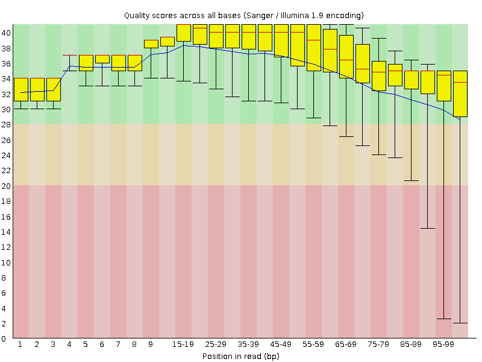
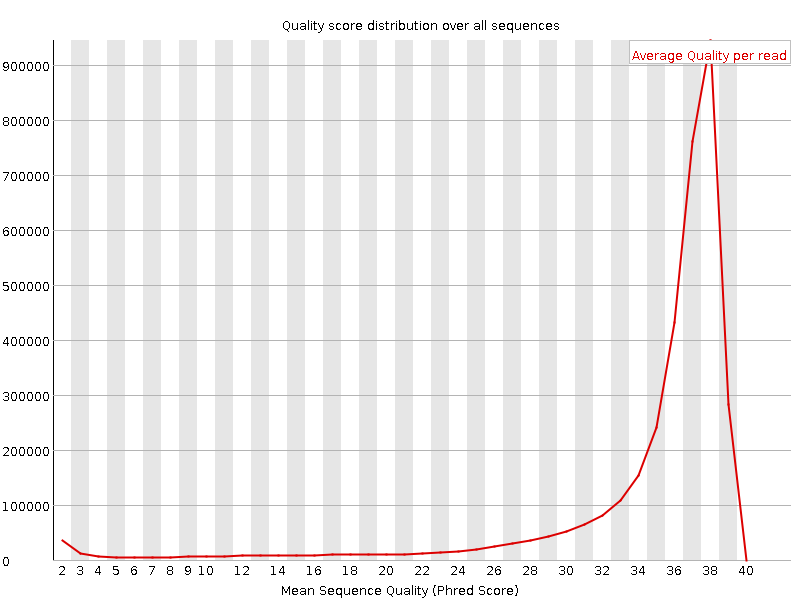
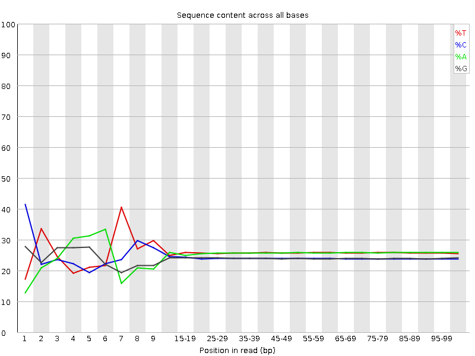
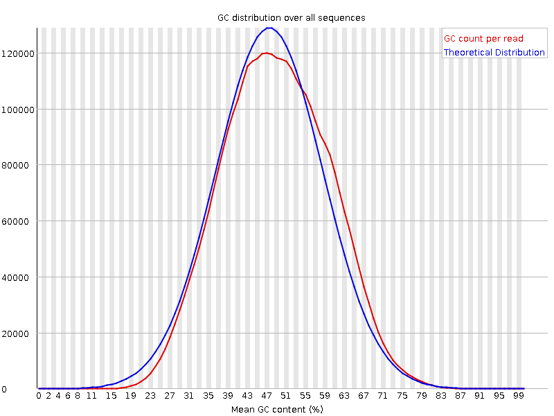
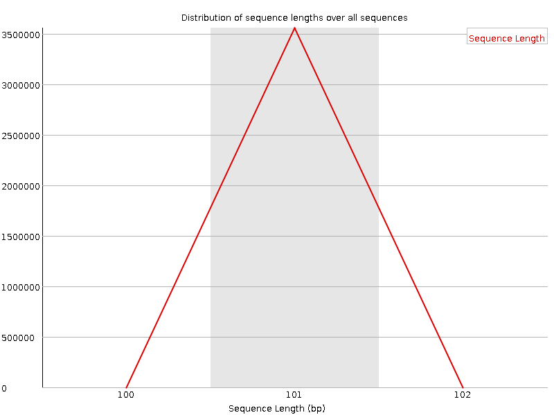
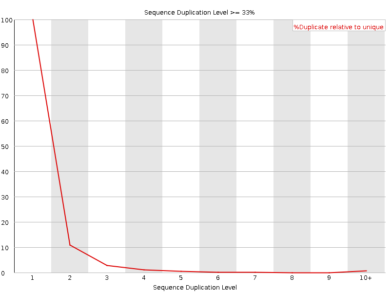
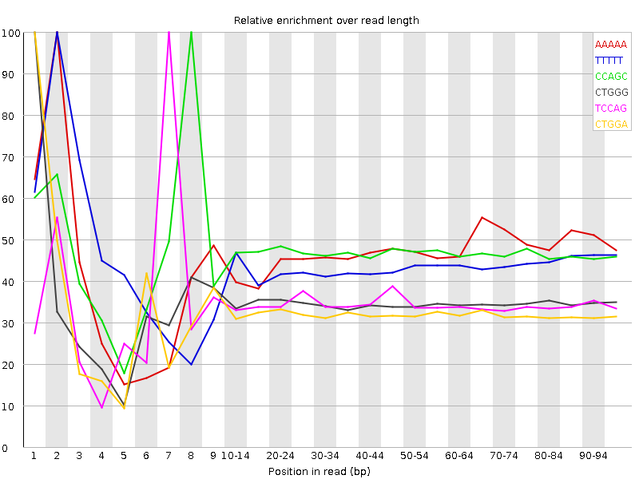

![[OK]](Icons/tick.png) Basic Statistics
Basic Statistics
| Measure | Value |
|---|---|
| Filename | C0VHUACXX120727.5.ATTGTCTG_1.fastq |
| File type | Conventional base calls |
| Encoding | Sanger / Illumina 1.9 |
| Total Sequences | 3554853 |
| Filtered Sequences | 0 |
| Sequence length | 101 |
| %GC | 48 |
Per base sequence quality

Per sequence quality scores

![[FAIL]](Icons/error.png) Per base sequence content
Per base sequence content

Per base GC content

Per sequence GC content

Per base N content

Sequence Length Distribution

![[WARN]](Icons/warning.png) Sequence Duplication Levels
Sequence Duplication Levels

Overrepresented sequences
No overrepresented sequences
Kmer Content

| Sequence | Count | Obs/Exp Overall | Obs/Exp Max | Max Obs/Exp Position |
|---|---|---|---|---|
| AAAAA | 1281250 | 3.321596 | 7.1085076 | 2 |
| TTTTT | 1163375 | 2.8953664 | 6.60149 | 2 |
| CCAGC | 718480 | 2.3524861 | 5.013379 | 8 |
| CTGGG | 691385 | 2.2722871 | 6.547006 | 1 |
| TCCAG | 720510 | 2.2105675 | 6.400371 | 7 |
| CTGGA | 710995 | 2.1944146 | 6.795515 | 1 |
| CTCCA | 698795 | 2.1312048 | 5.531561 | 6 |
| CTTCA | 735020 | 2.1005156 | 5.1254706 | 1 |
| AAAAT | 759425 | 1.9527743 | 5.6448236 | 3 |
| GAAAA | 706045 | 1.9491106 | 5.093591 | 1 |
| CTCAG | 562380 | 1.7254152 | 5.0428386 | 1 |
| CTTTG | 581455 | 1.6580034 | 5.0350976 | 1 |
| CTTGG | 526690 | 1.6123576 | 5.116638 | 1 |
| ATCCA | 428835 | 1.2355574 | 5.1824145 | 6 |